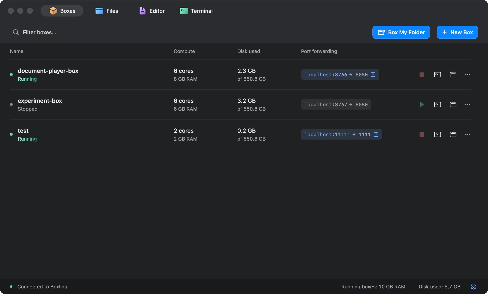
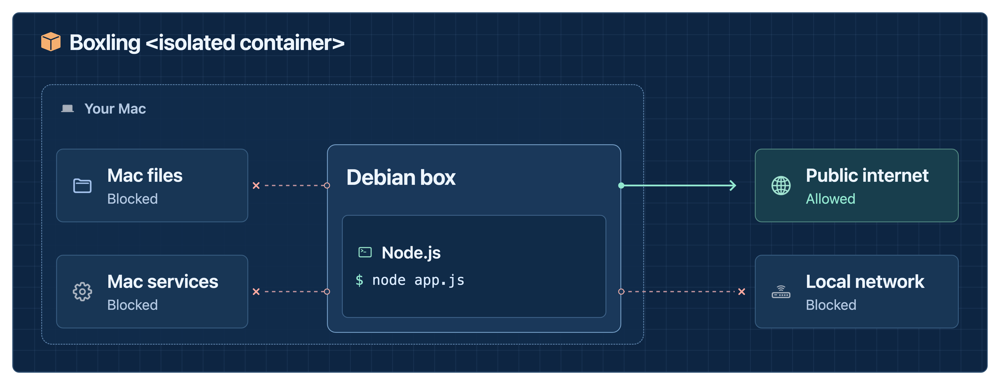
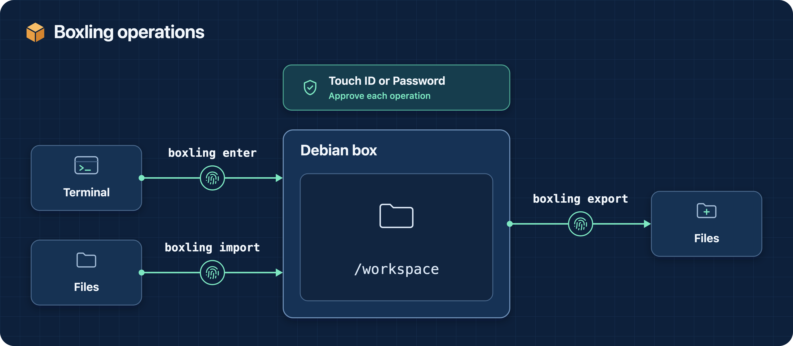
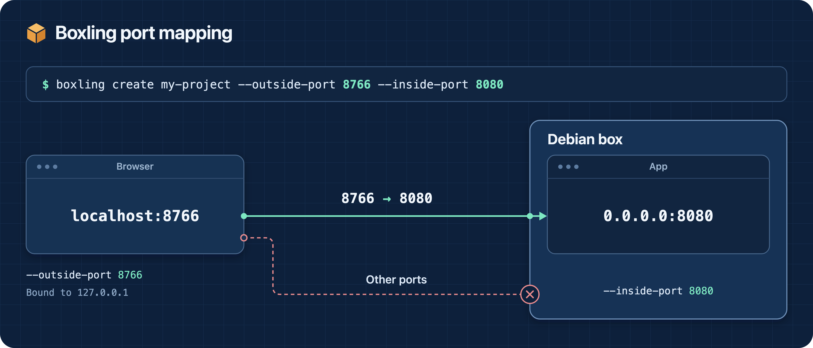
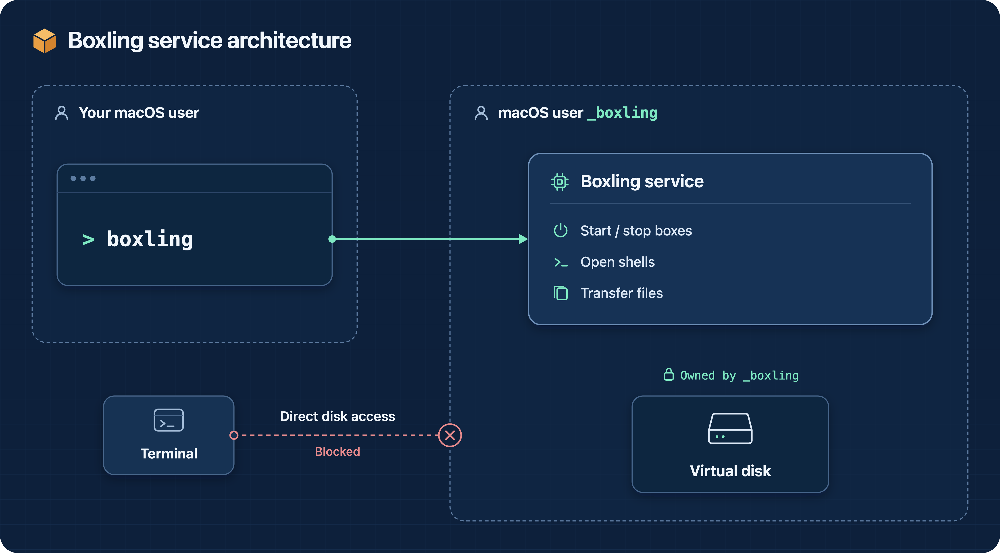

A macOS sandbox for AI coding agents and untrusted npm repos

Install with Homebrew
brew install --cask janpmz/tap/boxling
Apple silicon · macOS 26+
How it works




Screenshots
Install with Homebrew
brew install --cask janpmz/tap/boxling